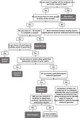

5 Publication Types
5.1 Reviews
There are several types of reviews which differ in scope, purpose, target audience and amount of work involved.(Sutton et al. (2019), Munn, Stern, et al. (2018), Munn, Peters, et al. (2018)) Among them the most prominent types are:
- Narrative / traditional review
- Scoping review (ScR)
- Systematic review (SR)
- Rapid review (RR)
- Umbrella review
The free online tool ‘Right Review’ is designed to provide guidance and supporting material when choosing any kind of knowledge synthesis.
Figure 5.1 shows a decision tree to help find the right kind of review.

5.1.1 narrative review
A narrative review, sometimes just literature review is a qualitative summary of literature for a specific research question. Sukhera (2022b) concludes:
“Well-done narrative reviews provide a readable, thoughtful, and practical synthesis on a topic. They allow review authors to advance new ideas while describing and interpreting literature in the field.”
Although narrative reviews are considered non-systematic, it does not mean they are done carelessly. Before systematic reviews became popular, the narrative review was a very common scientific publication and still constitutes a meaningful kind of literature synthesis. (Gregory and Denniss (2018), Greenhalgh et al. (2018), Thorne (2018), Sukhera (2022b))
- Doing a Literature Review in Health and Social Care: A Practical Guide by Aveyard (2023)
- Narrative Reviews: Flexible, Rigorous, and Practical. by Sukhera (2022b)
- Narrative Reviews in Medical Education: Key Steps for Researchers. by Sukhera (2022a)
- An Introduction to Writing Narrative and Systematic Reviews — Tasks, Tips and Traps for Aspiring Authors by Gregory and Denniss (2018)
- How to conduct a literature review by Keary et al. (2012)
5.1.2 rapid review
Rapid reviews (RR) are a quicker alternative to the traditional systematic review (SR) and are usually conducted in cases where decision makers require synthesized evidence in a time frame insufficient for a full SR and where limitations due to methodological shortcuts are acceptable.
The Cochrane Rapid Reviews Methods Group recommends the following definition (Garritty, Hamel, et al. (2024)):
A rapid review is a type of evidence synthesis that brings together and summarises information from different research studies to produce evidence for people such as the public, healthcare providers, researchers, policy makers, and funders in a systematic, resource efficient manner. This is done by speeding up the ways we plan, do, and/or share the results of conventional structured (systematic) reviews, by simplifying or omitting a variety of methods that should be clearly defined bythe authors.”
There is a series of publications from the Cochrane Rapid Reviews Methods Group which provides methodological guidance in conducting rapid reviews:
- Assessing the appropriateness of conducting an RR (Garritty et al. (2025))
- Guidance on team considerations, study selection, data extraction and risk of bias assessment (Nussbaumer-Streit et al. (2023))
- Guidance on literature search (Klerings et al. (2023))
- Guidance on rapid quality evidence synthesis (Booth et al. (2024))
- Interim guidance for the reporting of RRs (Stevens et al. (2025))
- Guidance on assessing the certainty of evidence (Gartlehner et al. (2024))
- Considerations and recommendations for evidence synthesis in rapid reviews (King et al. (2024))
- Involving different stakeholders as knowledge users (Garritty, Tricco, et al. (2024))
- Guidance on the use of supportive software (Affengruber et al. (2024))
- Guidance on rapid scoping, mapping and evidence and gap maps (Campbell et al. (2025))
5.1.3 realist review
A realist review or realist synthesis is concerned with questions of mechanisms rather than effect size. Realist reviews try to elucidate how an intervention influences contexts, which trigger mechanisms that effect certain outcomes. Usually the question format “What works for whom under what circumstances, how and why?” is typical for realist syntheses. A current publication standard for realist reviews is RAMESES (Realist And MEta-narrative Evidence Syntheses: Evolving Standards). (Wong et al. (2013))
5.1.4 systematic review
A systematic review (SR) is a comprehensive review of the best available evidence (i.e. all relevant research results) pertaining to a certain topic or research question. SRs are usually conducted by research groups over the time of several months. The purpose of SRs is to inform evidence-based decision making.
SRs are regarded as the gold standard in evidence synthesis due to the strict and rigorous methodology that should be followed by the SR project team.
In many cases a so-called meta-analysis is also performed, which quantifies the results of the systematic review. (See Murad et al. (2014), Nagendrababu et al. (2020), Mulrow (1994))
5.1.5 umbrella reviews
An umbrella review is a type of evidence synthesis that sums up other reviews, most prominently systematic reviews and meta-analyses, thus it is also called review of reviews. Methodological guidance on umbrella reviews is developed by JBI and available in the JBI manual. (Aromataris et al. (2015), Aromataris et al. (2020))